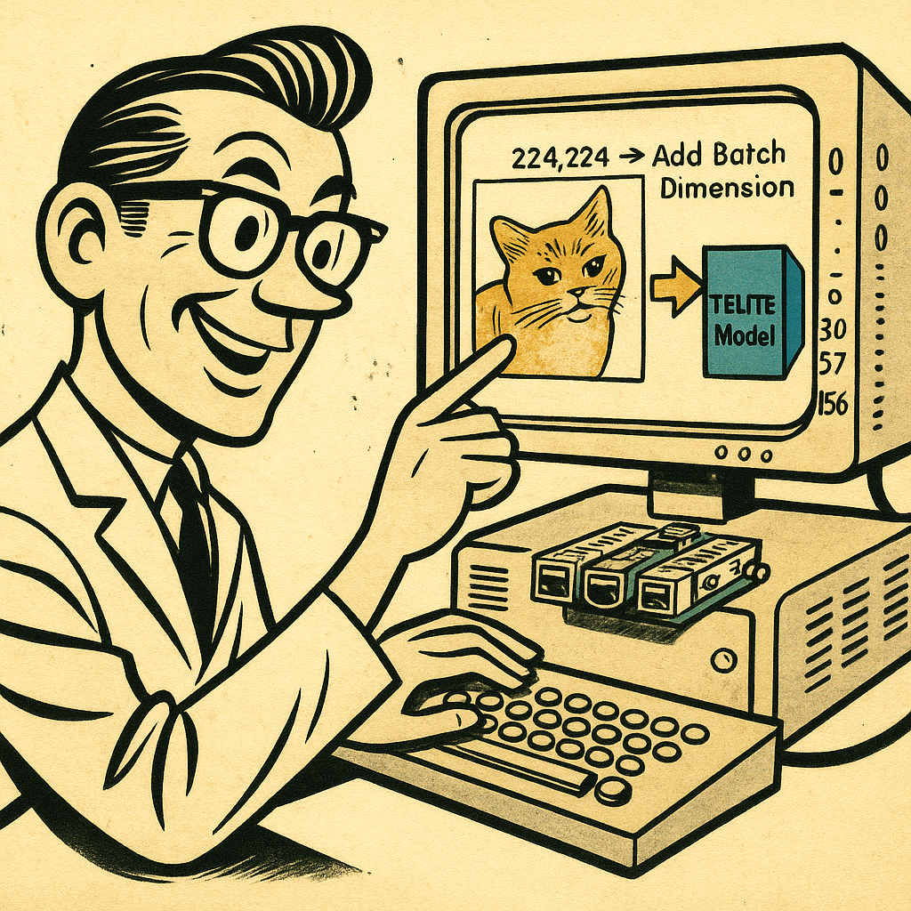
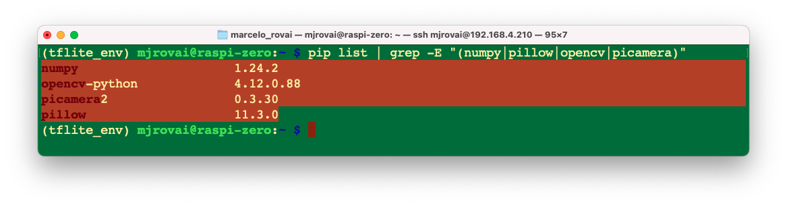
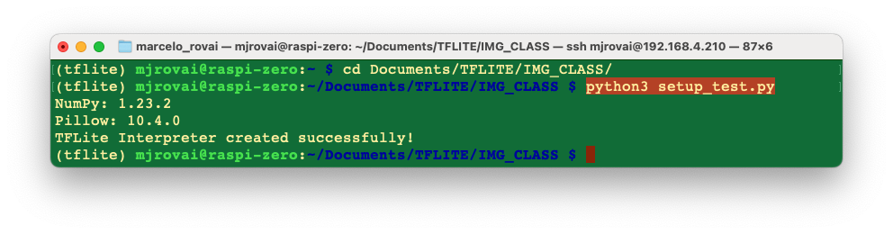
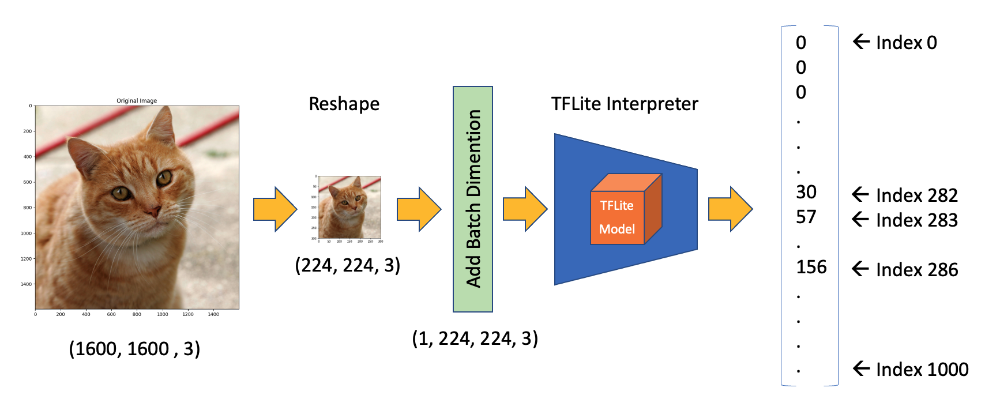

Image Classification Fundamentals

Introduction
Image classification is a fundamental task in computer vision that involves categorizing an image into one of several predefined classes. It’s a cornerstone of artificial intelligence, enabling machines to interpret and understand visual information in a way that mimics human perception.
Image classification refers to assigning a label or category to an entire image based on its visual content. This task is crucial in computer vision and has numerous applications across various industries. Image classification’s importance lies in its ability to automate visual understanding tasks that would otherwise require human intervention.
Applications in Real-World Scenarios
Image classification has found its way into numerous real-world applications, revolutionizing various sectors:
- Healthcare: Assisting in medical image analysis, such as identifying abnormalities in X-rays or MRIs.
- Agriculture: Monitoring crop health and detecting plant diseases through aerial imagery.
- Automotive: Enabling advanced driver assistance systems and autonomous vehicles to recognize road signs, pedestrians, and other vehicles.
- Retail: Powering visual search capabilities and automated inventory management systems.
- Security and Surveillance: Enhancing threat detection and facial recognition systems.
- Environmental Monitoring: Analyzing satellite imagery for deforestation, urban planning, and climate change studies.
Advantages of Running Classification on Edge Devices like Raspberry Pi
Implementing image classification on edge devices such as the Raspberry Pi offers several compelling advantages:
Low Latency: Processing images locally eliminates the need to send data to cloud servers, significantly reducing response times.
Offline Functionality: Classification can be performed without an internet connection, making it suitable for remote or connectivity-challenged environments.
Privacy and Security: Sensitive image data remains on the local device, addressing data privacy concerns and compliance requirements.
Cost-Effectiveness: Eliminates the need for expensive cloud computing resources, especially for continuous or high-volume classification tasks.
Scalability: Enables distributed computing architectures where multiple devices can work independently or in a network.
Energy Efficiency: Optimized models on dedicated hardware can be more energy-efficient than cloud-based solutions, which is crucial for battery-powered or remote applications.
Customization: Deploying specialized or frequently updated models tailored to specific use cases is more manageable.
We can create more responsive, secure, and efficient computer vision solutions by leveraging the power of edge devices like Raspberry Pi for image classification. This approach opens up new possibilities for integrating intelligent visual processing into various applications and environments.
In the following sections, we’ll explore how to implement and optimize image classification on the Raspberry Pi, harnessing these advantages to create powerful and efficient computer vision systems.
Setting Up the Environment
Updating the Raspberry Pi
First, ensure your Raspberry Pi is up to date:
sudo apt update
sudo apt upgrade -y
sudo reboot # Reboot to ensure all updates take effectInstalling Required Sytem Level Libraries
Install Python tools and camera libraries
sudo apt install -y python3-pip python3-venv python3-picamera2
sudo apt install -y libcamera-dev libcamera-tools libcamera-appsPicamera2, a Python library for interacting with Raspberry Pi’s camera, is based on the libcamera camera stack, and the Raspberry Pi Foundation maintains it. The Picamera2 library is supported on all Raspberry Pi models, from the Pi Zero to the Pi 5.
Testing picamera2 Instalation
Setting up a Virtual Environment
Create a virtual environment with access to system packages to manage dependencies:
python3 -m venv ~/tflite_env --system-site-packagesActivate the environment:
source ~/tflite_env/bin/activateTo exit the virtual environment, use:
deactivateInstall Python Packages (inside Virtual Environment)
Ensure you’re in the virtual environment (venv)
pip install numpy pillow # Image processing
pip install matplotlib # For displaying images
pip install opencv-python # Computer visionVerify installation
pip list | grep -E "(numpy|pillow|opencv|picamera)"
The proven Numpy version should be 1.24.2. If you have another version installed, first uninstall it.
pip uninstall numpyInstall version 1.24.2, which is compatible with the tflite_runtime and picamera.
pip3 install numpy==1.24.2System vs pip Package Installation Rule
Use sudo apt install (outside of venv) for:
- System-level dependencies and libraries
- Hardware interface libraries (as a camera)
- Development headers and build tools
- Anything that needs to interface directly with hardware
Use pip install (inside venv) for:
- Pure Python packages
- Application-specific libraries
- Packages that don’t need system-level access
Rule of thumb: Use
sudo apt installonly for system dependencies and hardware interfaces. Usepip install(without sudo) inside an activated virtual environment for everything else. Inside the vent, PIP or PIP3 are the same.The virtual environment will automatically see both the system packages and the pip-installed packages thanks to the
--system-site-packagesflag.
Setting up Jupyter Notebook
Let’s set up Jupyter Notebook optimized for headless Raspberry Pi camera work and development:
pip install jupyter jupyterlab notebook
jupyter notebook --generate-configTo run Jupyter Notebook, run the command (change the IP address for yours):
jupyter notebook --ip=192.168.4.210 --no-browserOn the terminal, you can see the local URL address to open the notebook:

You can access it from another device by entering the Raspberry Pi’s IP address and the provided token in a web browser (you can copy the token from the terminal).
Define the working directory in the Raspi and create a new Python 3 notebook. For example:
cd Documents
mkdir PythonIt is possible to create folders directly in the Jupyter Notebook
Create a new Notebook and test the code below:
Import Libraries
import time
import numpy as np
from PIL import Image
import matplotlib.pyplot as plt
from picamera2 import Picamera2Load an image from the internet, for example (note that it is possible to run a command line from the Notebook, using ! before the command:
!wget https://upload.wikimedia.org/wikipedia/commons/3/3a/Cat03.jpgAn image (Cat03.jpg will be downloaded to the current directory.
Load and show the image:
img_path = "Cat03.jpg"
img = Image.open(img_path)
# Display the image
plt.figure(figsize=(6, 6))
plt.imshow(img)
plt.title("Original Image")
plt.show()We can see the image displayed on the Notebook:

Now, let’s use the camera to capture a local image:
from picamera2 import Picamera2
import time
# Initialize camera
picam2 = Picamera2()
picam2.start()
# Wait for camera to warm up
time.sleep(2)
# Capture image
picam2.capture_file("class3_test.jpg")
print("Image captured: class3_test.jpg")
# Stop camera
picam2.stop()
picam2.close()And use a similar code as before to show it (adapting the img_path and title):
Installing TensorFlow Lite
We are interested in performing inference, which refers to executing a TensorFlow Lite model on a device to make predictions based on input data. To perform an inference with a TensorFlow Lite model, we must run it through an interpreter. The TensorFlow Lite interpreter is designed to be lean and fast. The interpreter uses a static graph ordering and a custom (less-dynamic) memory allocator to ensure minimal load, initialization, and execution latency.
We’ll use the TensorFlow Lite runtime for Raspberry Pi, a simplified library for running machine learning models on mobile and embedded devices, without including all TensorFlow packages.
pip install tflite-runtimeThe wheel installed:
tflite_runtime-2.14.0-cp311-cp311-manylinux_2_34_aarch64.whl
Reboot the system:
sudo rebootVerify instalation:
pip list | grep -E "(tflite-runtime)"We should see as a response: tflite-runtime 2.14.0.
Creating a working directory:
If you are working on the Raspi-Zero with the minimum OS (No Desktop), you do not have a user-pre-defined directory tree (you can check it with ls. So, let’s create one:
mkdir Documents
cd Documents/
mkdir TFLITE
cd TFLITE/
mkdir IMG_CLASS
cd IMG_CLASS
mkdir models
cd modelsOn the Raspi-5, the
/Documentsshould be there.
Get a pre-trained Image Classification model:
An appropriate pre-trained model is crucial for successful image classification on resource-constrained devices like the Raspberry Pi. MobileNet is designed for mobile and embedded vision applications with a good balance between accuracy and speed. Versions: MobileNetV1, MobileNetV2, MobileNetV3. Let’s download the V2:
wget https://storage.googleapis.com/download.tensorflow.org/models/tflite_11_05_08/mobilenet_v2_1.0_224_quant.tgz
tar xzf mobilenet_v2_1.0_224_quant.tgzGet its labels:
wget https://raw.githubusercontent.com/Mjrovai/EdgeML-with-Raspberry-Pi/refs/heads/main/IMG_CLASS/models/labels.txtIn the end, you should have the models in its directory:

We will only need the
mobilenet_v2_1.0_224_quant.tflitemodel and thelabels.txt. We can delete the other files.
Verifying the Setup
Let’s test our setup by running a simple Python script:
import tflite_runtime.interpreter as tflite
import numpy as np
from PIL import Image
print("NumPy:", np.__version__)
print("Pillow:", Image.__version__)
# Try to create a TFLite Interpreter
model_path = "./models/mobilenet_v2_1.0_224_quant.tflite"
interpreter = tflite.Interpreter(model_path=model_path)
interpreter.allocate_tensors()
print("TFLite Interpreter created successfully!")We can create the Python script using nano on the terminal, saving it with CTRL+0 + ENTER + CTRL+X

And run it with the command:
python setup_test.py
Or you can run it directly on the Notebook:

Making inferences with Mobilenet V2
In the last section, we set up the environment, including downloading a popular pre-trained model, Mobilenet V2, trained on ImageNet’s 224x224 images (1.2 million) for 1,001 classes (1,000 object categories plus 1 background). The model was converted to a compact 3.5MB TensorFlow Lite format, making it suitable for the limited storage and memory of a Raspberry Pi.

In the IMG_CLASS working directory, let’s start a new notebook to follow all the steps to classify one image:
Import the needed libraries:
import time
import numpy as np
import matplotlib.pyplot as plt
from PIL import Image
import tflite_runtime.interpreter as tfliteLoad the TFLite model and allocate tensors:
model_path = "./models/mobilenet_v2_1.0_224_quant.tflite"
interpreter = tflite.Interpreter(model_path=model_path)
interpreter.allocate_tensors()Get input and output tensors.
input_details = interpreter.get_input_details()
output_details = interpreter.get_output_details()Input details will give us information about how the model should be fed with an image. The shape of (1, 224, 224, 3) informs us that an image with dimensions (224x224x3) should be input one by one (Batch Dimension: 1).

The output details show that the inference will result in an array of 1,001 integer values. Those values result from the image classification, where each value is the probability of that specific label being related to the image.

Let’s also inspect the dtype of input details of the model
input_dtype = input_details[0]['dtype']
input_dtypedtype('uint8')This shows that the input image should be raw pixels (0 - 255).
Let’s get a test image. We can either transfer it from our computer or download one for testing, as we did before. Let’s first create a folder under our working directory:
mkdir images
cd images
wget https://upload.wikimedia.org/wikipedia/commons/3/3a/Cat03.jpgLet’s load and display the image:
# Load he image
img_path = "./images/Cat03.jpg"
img = Image.open(img_path)
# Display the image
plt.figure(figsize=(8, 8))
plt.imshow(img)
plt.title("Original Image")
plt.show()
We can see the image size running the command:
width, height = img.sizeThat shows us that the image is an RGB image with a width of 1600 and a height of 1600 pixels. To use our model, we should reshape it to (224, 224, 3) and add a batch dimension of 1, as defined in the input details: (1, 224, 224, 3). The inference result, as shown in the output details, will be an array of size 1001, as shown below:

So, let’s reshape the image, add the batch dimension, and see the result:
img = img.resize((input_details[0]['shape'][1], input_details[0]['shape'][2]))
input_data = np.expand_dims(img, axis=0)
input_data.shapeThe input_data shape is as expected: (1, 224, 224, 3)
Let’s confirm the dtype of the input data:
input_data.dtypedtype('uint8')
The input data dtype is ‘uint8’, which is compatible with the dtype expected for the model.
Using the input_data, let’s run the interpreter and get the predictions (output):
interpreter.set_tensor(input_details[0]['index'], input_data)
interpreter.invoke()
predictions = interpreter.get_tensor(output_details[0]['index'])[0]The prediction is an array with 1001 elements. Let’s get the Top-5 indices where their elements have high values:
top_k_results = 5
top_k_indices = np.argsort(predictions)[::-1][:top_k_results]
top_k_indices The top_k_indices is an array with 5 elements: array([283, 286, 282])
So, 283, 286, 282, 288, and 479 are the image’s most probable classes. Having the index, we must find to what class it appoints (such as car, cat, or dog). The text file downloaded with the model has a label associated with each index from 0 to 1,000. Let’s use a function to load the .txt file as a list:
def load_labels(filename):
with open(filename, 'r') as f:
return [line.strip() for line in f.readlines()]And get the list, printing the labels associated with the indexes:
labels_path = "./models/labels.txt"
labels = load_labels(labels_path)
print(labels[286])
print(labels[283])
print(labels[282])
print(labels[288])
print(labels[479])As a result, we have:
Egyptian cat
tiger cat
tabby
lynx
cartonAt least four of the top indices are related to felines. The prediction content is the probability associated with each one of the labels. As we saw in the output details, those values are quantized and should be dequantized:
scale, zero_point = output_details[0]['quantization']
dequantized_output = (predictions.astype(np.float32) - zero_point) * scale
dequantized_outputarray([-0.8900329, -0.4944627, 1.285603 , ..., -1.9778508, 1.5822806,
4.549057 ], dtype=float32)The output (positive and negative numbers) shows that the output probably does not have a Softmax. Checking the model documentation (https://arxiv.org/abs/1801.04381v4): MobileNet V2 typically doesn’t include a softmax layer at the output. It usually ends with a 1x1 convolution followed by average pooling and a fully connected layer. So, for getting the probabilities (0 to 1), we should apply Softmax:
exp_output = np.exp(dequantized_output - np.max(dequantized_output))
probabilities = exp_output / np.sum(exp_output)Let’s print the top-5 probabilities:
print (probabilities[286])
print (probabilities[283])
print (probabilities[282])
print (probabilities[288])
print (probabilities[479])0.27741462
0.3732285
0.16919471
0.10319158
0.023410844For clarity, let’s create a function to relate the labels to the probabilities:
for i in range(top_k_results):
print("\t{:20}: {}%".format(
labels[top_k_indices[i]],
(int(probabilities[top_k_indices[i]]*100))))tiger cat : 37%
Egyptian cat : 27%
tabby : 16%
lynx : 10%
carton : 2%Define a general Image Classification function
Let’s create a general function to give an image as input, and we get the Top-5 possible classes:def image_classification(img_path, model_path, labels, top_k_results=5):
# load the image
img = Image.open(img_path)
plt.figure(figsize=(4, 4))
plt.imshow(img)
plt.axis('off')
# Load the TFLite model
interpreter = tflite.Interpreter(model_path=model_path)
interpreter.allocate_tensors()
# Get input and output tensors
input_details = interpreter.get_input_details()
output_details = interpreter.get_output_details()
# Preprocess
img = img.resize((input_details[0]['shape'][1],
input_details[0]['shape'][2]))
input_data = np.expand_dims(img, axis=0)
# Inference on Raspi-Zero
interpreter.set_tensor(input_details[0]['index'], input_data)
interpreter.invoke()
# Obtain results and map them to the classes
predictions = interpreter.get_tensor(output_details[0]['index'])[0]
# Get indices of the top k results
top_k_indices = np.argsort(predictions)[::-1][:top_k_results]
# Get quantization parameters
scale, zero_point = output_details[0]['quantization']
# Dequantize the output and apply softmax
dequantized_output = (predictions.astype(np.float32) - zero_point) * scale
exp_output = np.exp(dequantized_output - np.max(dequantized_output))
probabilities = exp_output / np.sum(exp_output)
print("\n\t[PREDICTION] [Prob]\n")
for i in range(top_k_results):
print("\t{:20}: {}%".format(
labels[top_k_indices[i]],
(int(probabilities[top_k_indices[i]]*100))))And loading some images for testing, we have:

Testing the classification with the Camera
Let’s modify the Python script used before to capture an image from the camera (size: 224x224), saving it in the images folder:
from picamera2 import Picamera2
import time
def capture_image(image_path):
# Initialize camera
picam2 = Picamera2() # default is index 0
# Configure the camera
config = picam2.create_still_configuration(main={"size": (224, 224)})
picam2.configure(config)
picam2.start()
# Wait for camera to warm up
time.sleep(2)
# Capture image
picam2.capture_file(image_path)
print("Image captured: "+"image_path")
# Stop camera
picam2.stop()
picam2.close()Now, let’s capture an image and sent it for inference:
img_path = './images/cam_img_test.jpg'
model_path = "./models/mobilenet_v2_1.0_224_quant.tflite"
labels = load_labels("./models/labels.txt")
capture_image(img_path)
image_classification(img_path, model_path, labels, top_k_results=5)Exploring a Model Trained from Zero
Let’s get a TFLite model trained from scratch. For that, we can follow the Notebook:
CNN to classify Cifar-10 dataset
In the notebook, we trained a model using the CIFAR10 dataset, which contains 60,000 images from 10 classes of CIFAR (airplane, automobile, bird, cat, deer, dog, frog, horse, ship, and truck). CIFAR has 32x32 color images (3 color channels) where the objects are not centered and can have the object with a background, such as airplanes that might have a cloudy sky behind them! In short, small but real images.
The CNN trained model (cifar10_model.keras) had a size of 2.0MB. Using the TFLite Converter, the model cifar10.tflite became with 674MB (around 1/3 of the original size).

Runing the notebook 20_Cifar_10_Image_Classification.ipynb with the trained model: cifar10.tflite, and following the same steps as we did with the MobileNet model, we can see that the inference result is inferior in terms of probability when compared with the MobileNetV2.
Below are examples of images using the General Function for Image Classification on a Raspberry Pi Zero, as shown in the last section.

Conclusion:
This chapter has established a solid foundation for understanding and implementing image classification on Raspberry Pi devices using Python and TensorFlow Lite. Throughout this journey, we have explored the essential components that make edge-based computer vision both practical and powerful.
We began by understanding the theoretical foundations of image classification and its real-world applications across diverse sectors, from healthcare to environmental monitoring. The advantages of running classification on edge devices like the Raspberry Pi—including low latency, offline functionality, enhanced privacy, and cost-effectiveness—make it an attractive solution for many practical applications.
The hands-on experience of setting up the development environment provided crucial insights into the requirements and constraints of embedded systems. We successfully configured TensorFlow Lite runtime, installed essential Python libraries, and established a working directory structure that serves as the foundation for computer vision projects.
Working with the pre-trained MobileNet V2 model demonstrated several key concepts:
- Model Architecture Understanding: We explored how pre-trained models like MobileNet V2 are optimized for mobile and embedded applications, achieving an excellent balance between accuracy and computational efficiency.
- Quantization Benefits: The 3.5MB quantized model showed how compression techniques make sophisticated neural networks feasible on resource-constrained devices without significant accuracy loss.
- Inference Pipeline: We implemented the complete inference workflow, from image preprocessing (resizing to 224×224, handling data types) to post-processing (dequantization, softmax application, and top-k prediction extraction).
- Performance Considerations: The chapter highlighted the importance of understanding model input/output specifications, memory management, and the trade-offs between accuracy and speed on edge devices.
The practical implementation using cameras connected to a Raspberry Pi demonstrated the seamless integration between hardware and software components. The ability to capture images directly from the device and perform real-time classification showcases the potential for autonomous and IoT applications.
Key technical achievements include:
- Successfully setting up TensorFlow Lite runtime and dependencies
- Implementing proper image preprocessing pipelines
- Understanding quantized model operations and dequantization processes
- Creating reusable functions for image classification tasks
- Integrating camera capture with inference workflows
This foundational knowledge prepares us for more advanced topics, including custom model training and deployment. The skills developed here—understanding model architectures, implementing inference pipelines, and working with embedded Python environments—are transferable to a wide range of computer vision applications.
The chapter serves as a stepping stone toward building more sophisticated AI systems on edge devices, demonstrating that powerful computer vision capabilities are accessible even on modest hardware platforms when properly optimized and implemented.